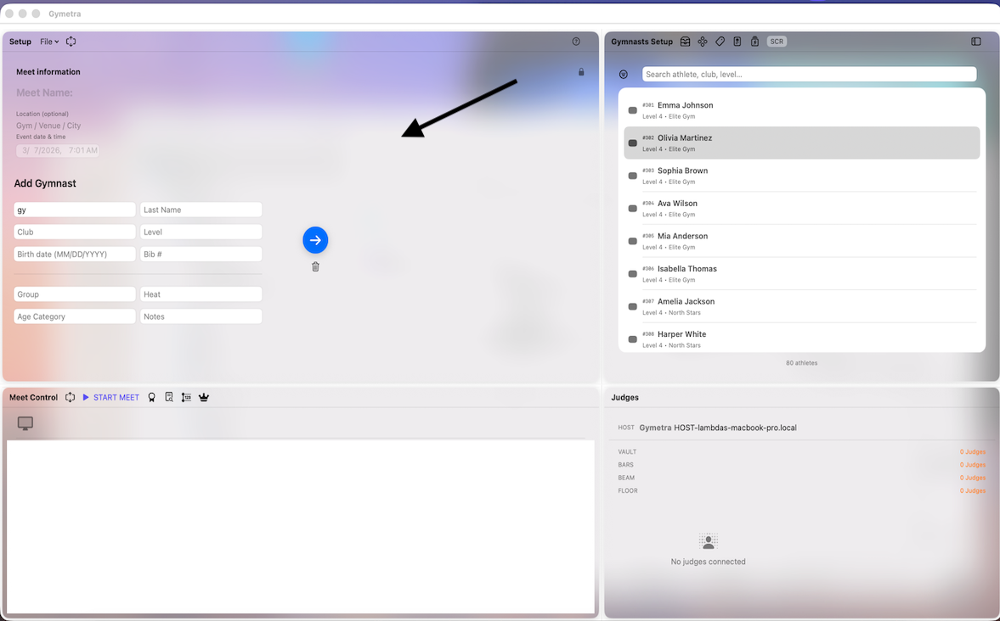
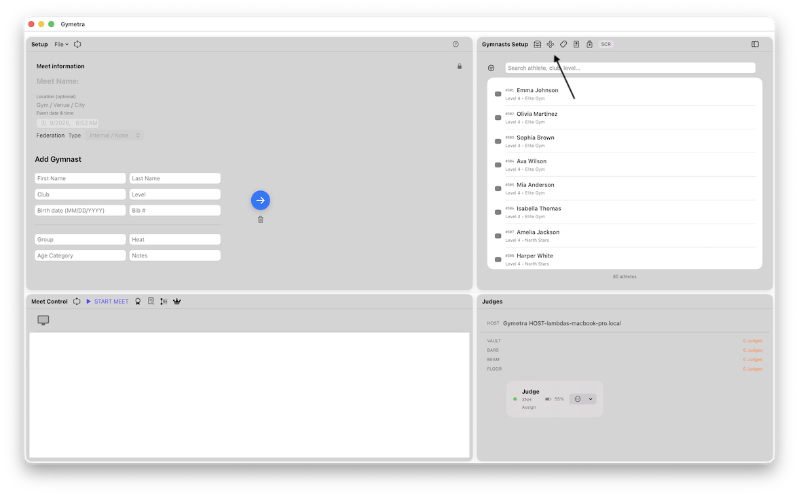
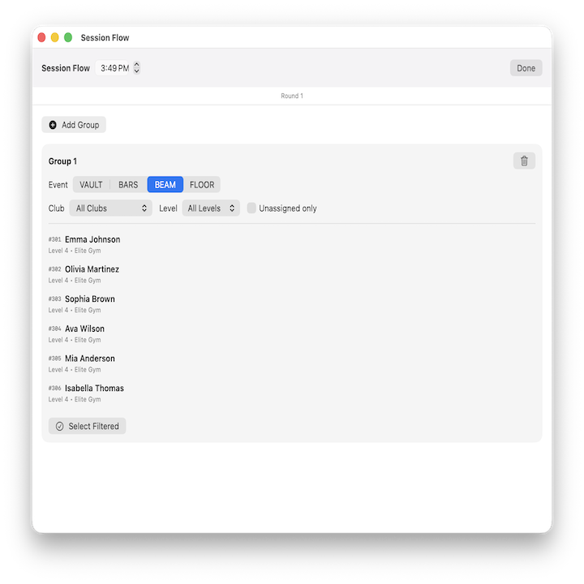
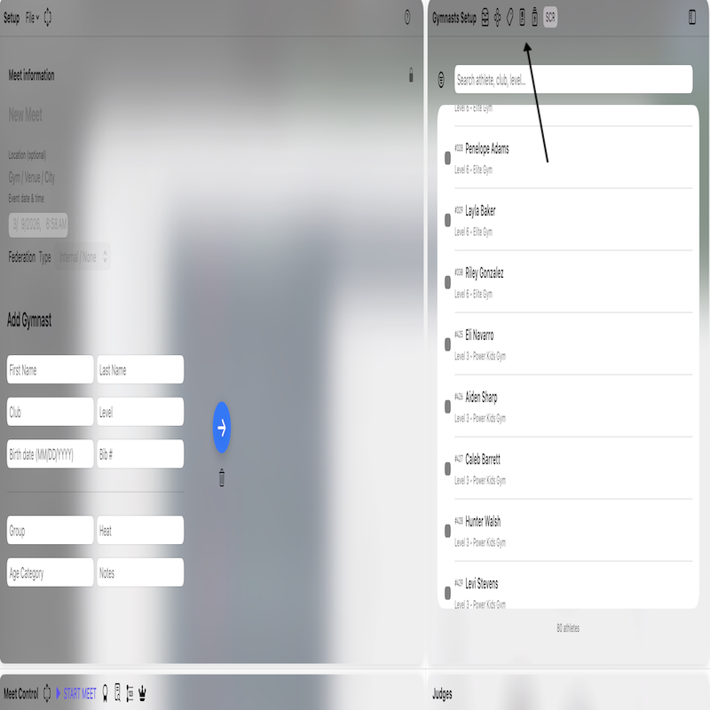
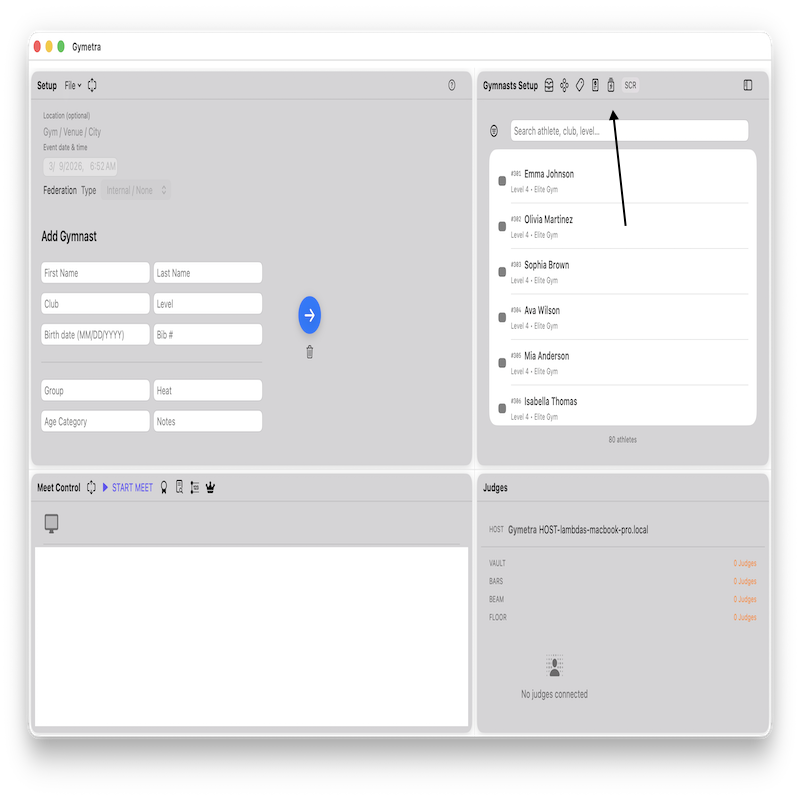
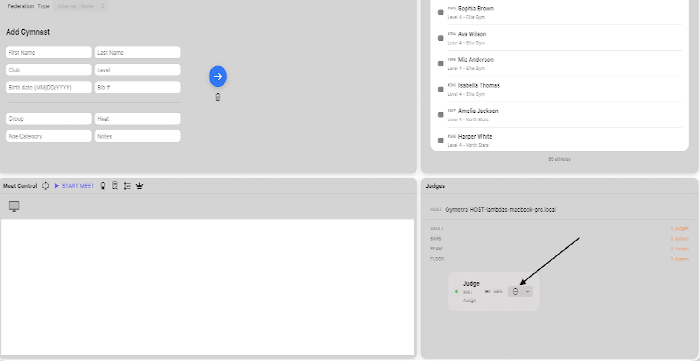
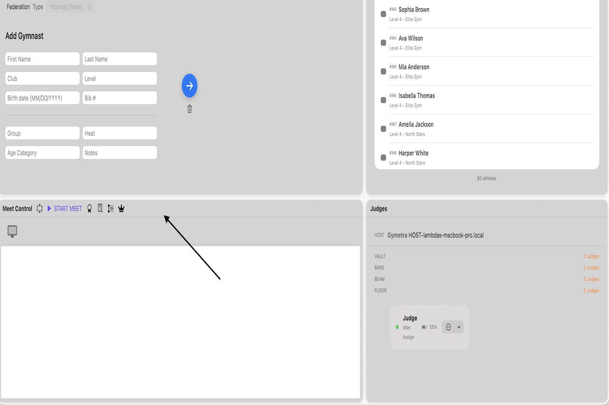

Quick Guide to Managing a Meet
On the left panel, you can manually add gymnasts and judges. Enter the gymnast information and assign judges that will participate in the meet.

After adding athletes, create groups for the competition. Groups help organize gymnasts by level, age division, or rotation order.


After adding groups, Confirm the group and sessions.

Once groups are created, assign gymnasts to their corresponding groups. This step prepares the meet structure and determines the order of performance.

Below the groups section, you can assign judges to each apparatus. Judges connected with the iPad application will automatically receive their assignments.

The Meet Control panel allows you to manage the competition. From here you can start the meet, control rotations, and manage the active gymnast.
